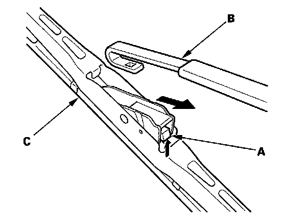
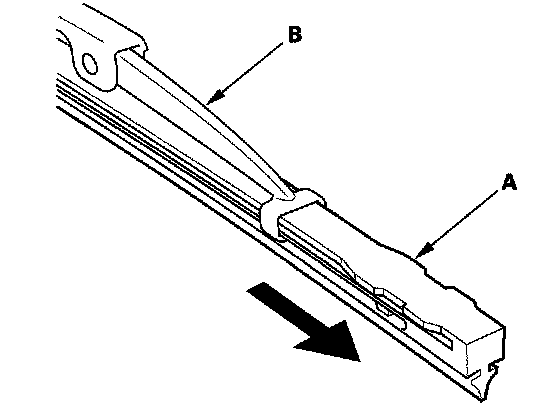
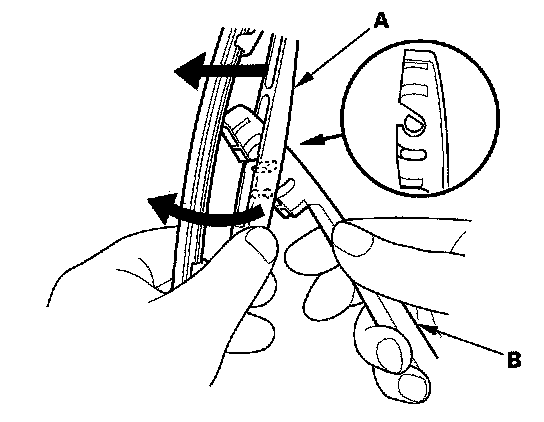
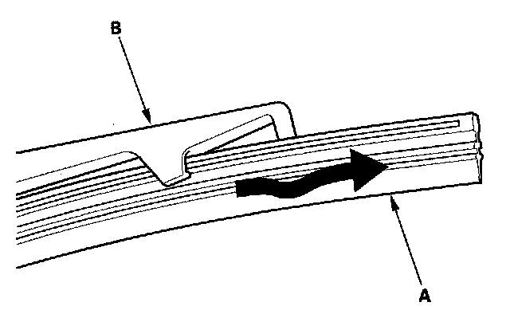

Wiper Blade: Service and Repair
Wiper Blade ReplacementWindshield
1. Lift the wiper arms from the windshield.
NOTE: Lift the driver's side first.

2. Press and hold the tab (A) and slide the wiper blade (B) toward the tab to release it from the wiper arm.

3. Slide the rubber (A) out from the wiper blade (B).
4. Install a new rubber to the wiper blade in the reverse order of removal.
5. Install the wiper blades onto the wiper arms in the reverse order of removal.
6. Check the wiper operation, if the blades slip, turn the wiper switch OFF, and reinstall the wiper blades securely.
Rear Window
1. Lift the wiper arm from the rear window.

2. Turn the rear wiper blade (A), release the lock, and then remove the wiper blade from the rear wiper arm (B).

3. Raise the old rubber (A), and remove it from the wiper blade (B).
4. Install the new rubber and the wiper blade in the reverse order of removal.
NOTE: After installation, confirm that the wiper arm works smoothly.